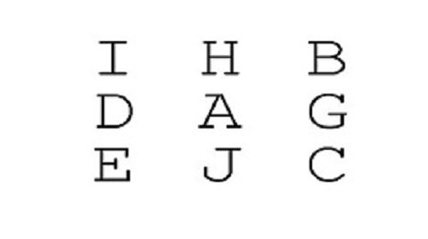
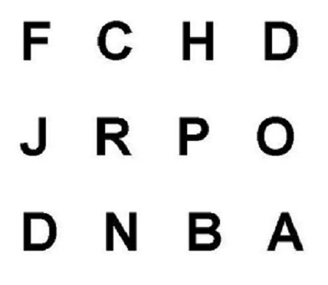
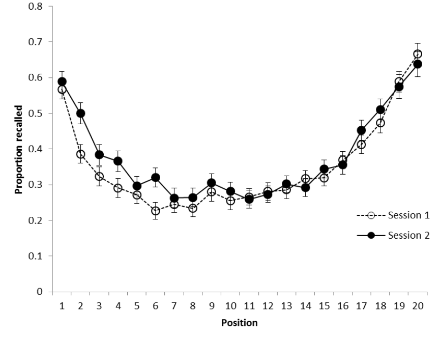
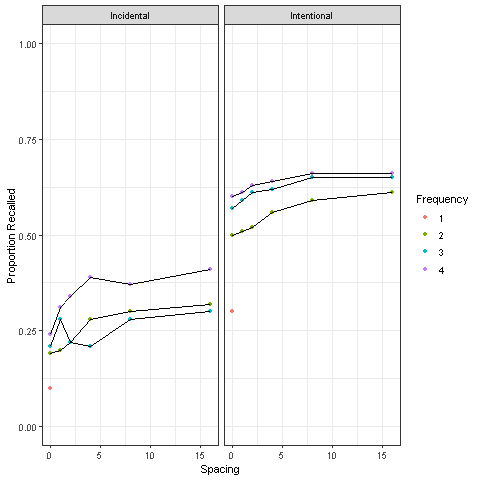
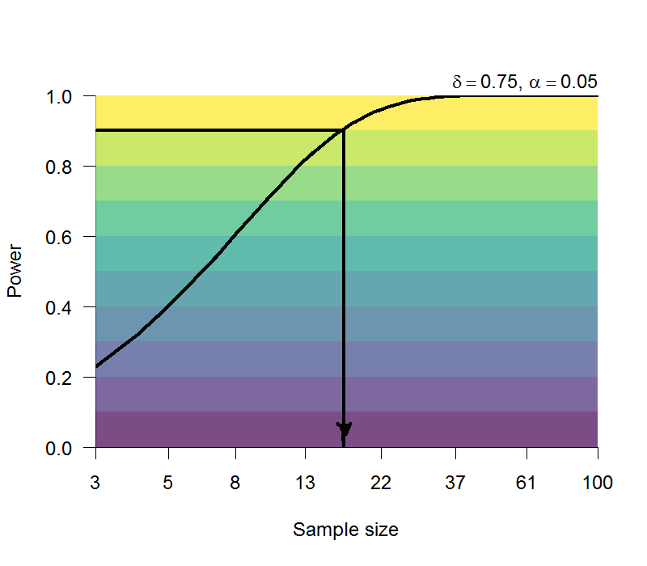
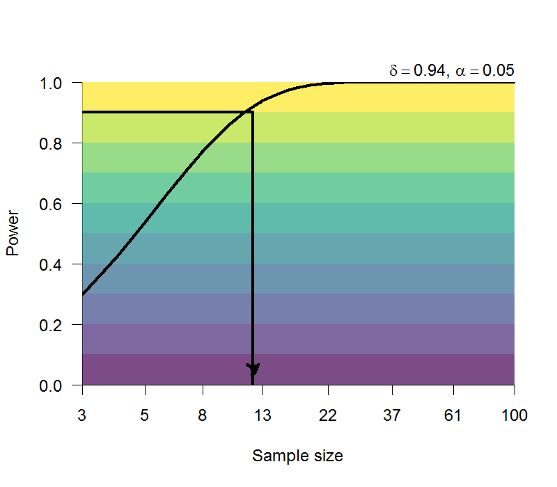
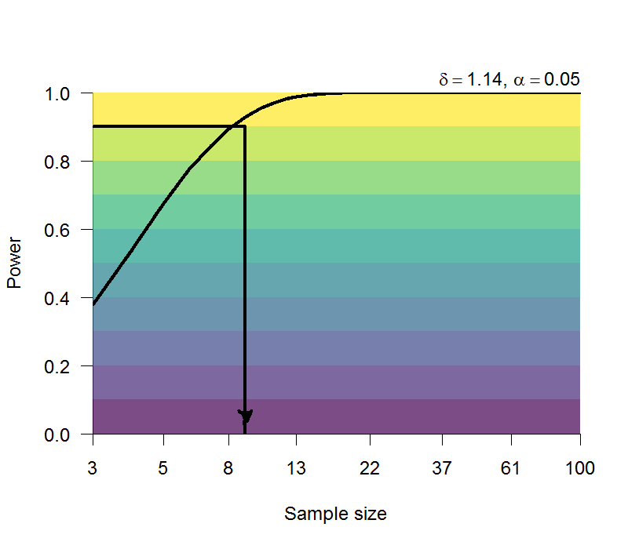

5 可重製的記憶研究
本單元學習目標：記憶研究的知識更新。可能的混淆因素~task demand; celling or flooring。資料分析重點 ~ 正確率/錯誤率的整理、信號敏感度。如何使用開源實驗平台重製記憶實驗。如何使用開源統計軟體規劃實驗資料分析。
運用預先註冊範本 AsPredicted.org1列出的項目，檢驗 Zwaan et al. (2018) 的各項記憶實驗，重製實驗設計條件與原始實驗的相同及相異之處？
評估在本地執行重製實驗的可行性？什麼條件需要進行調整？
6 舊版教材回顧
心理學尚未被當做一門科學之前，有兩千多年的時間，世界各地的人類文明都有讚美擁有過人記憶力的特殊人物，有些事蹟甚至轉化為諺語留傳。西方希臘古典時期，在柏拉圖以文字記述〈理想國〉之前，當時的知識以口傳故事與詩歌形式創造及傳承。知識份子的能力以能複誦的故事與詩歌數目衡量，甚至認為依賴文字錄是一種導致人類靈魂墮落的途徑(參考 柏拉圖, 2017, 蘇格拉底論書寫)。東方社會雖然比西方更早接受文字的好處，很多朝代都有留下讚嘆記憶超群者的成語，像是一目十行，過目不忘。直到現代的國民教育，父母與老師一直提醒學子學習過程中，保持記憶的重要性。
二十世紀中葉電腦問世之後，人類依賴書寫文字儲存資訊的形式與需求有了更大的改進，心理學家更有餘裕研究人類的心智是如何儲存與處理資訊。1960年代出現好幾位實驗心理學者，提出人類記憶是一種資訊處理系統的理論觀點，設計或改進許多影響今天心理科學研究的實驗方法。這個單元引述幾件代表性實驗，介紹記憶實驗研究的演進，以及對實驗心理學的影響。
6.1 研究主題與方法的演變
現代心理科學的記憶研究主題與方法奠基於德國心理學家赫曼．艾賓浩斯(Hermann Ebbinghaus, 圖@ref(fig:ch05-fig01))在1879到1885年間累積的研究成果，發表於1885年出版的Über das Gedächtnis. Untersuchungen zur experimentellen Psychologie(英文書名是Memory: A Contribution to Experimental Psychology)。艾賓浩斯開啟的研究是首次採用隨機分派方法，測量記憶一系列無意義音節的學習表現。艾賓浩斯挑選的無意義音節是子音-母音-子音的組合，例如kyh,pil,goj等。使用無意義音節的理由是想排除過去經驗干擾學習表現，以回憶正確比例與再次記憶花費時間，測量人類心智的純粹記憶功能。以今日的心理學實驗設計原則，艾賓浩斯可以這麼做的原因是受測者只有他自己一個人。
儘管實驗結果不一定能穩定重複，艾賓浩斯的研究方法與發現啟發後來的記憶研究。例如學習一系列音節後，間隔一段時間回憶，正確率會逐漸下降，但是到一個水準下降就趨緩。艾賓浩斯將每次回憶的正確率畫在圖紙，形成的曲線被稱為遺忘曲線(The Forgetting Curve，圖@ref(fig:forgetting-curve))。進一步檢查正確回憶的項目，艾賓浩斯發現學習過程裡排序最前與最後的項目，最不容易被遺忘，後來的心理學研究者稱為初始效應(Primacy Effect)與新近效應(Recency Effect)。

艾賓浩斯每次學習無意義音節的方式是記憶8到20組材料，不斷複誦直到百分之百正確。回憶正確率從第一次複誦到完全學會，形成一道上昇曲線，艾賓浩斯稱之學習曲線(The Learning Curve，圖@ref(fig:learning-curve))。其中一系列實驗裡，艾賓浩斯安排幾組音節在第一天之後的每日學習材料重覆出現，這些材料再次學習時間隨著重覆次數越來越短，中斷學習一段時間之後也不容易遺忘。Ebbinghaus稱這個現象為間隔效應(Spacing Effect，參考圖@ref(fig:forgetting-curve))。後世教育學者根據這項發現，發展出間隔重覆學習法(“Spaced Repetition,” 2018)，廣泛運用於外語學習等課程。然而，和初始效應與新近效應一樣，因為缺乏穩定的再現程序，過了一甲子之後，才有改良並能穩定再現的研究方法出現。可再現的記憶實驗是心理學家採用系統和歷程的觀點研究記憶，進而改良前人方法而得到穩定結果。我們由這段演變過程，可以看到一門科學領域的理論與方法的演進是相輔相成的。

6.2 確認記憶系統架構的實驗研究
1960年代記憶的心理學研究受到計算機工程的啟發，心理學家設想人類的記憶系統由那些元件組成？以及提出能檢驗系統假設的方法。心理學家對於人類記憶系統的看法隨著研究方法與相關領域知識的更新，內容越來越複雜細緻(參考維基百科條目 Wikiversity (2018) )，不過基本架構在1960年代已經底定。
人類記憶由三種子系統構成：感覺記憶；短期記憶；長期記憶。三種系統都有編碼、儲存與提取資訊的功能，差異在於處理的資訊登錄於整個系統的新舊。感覺記憶收錄即時接觸的資訊，短期記憶處理正在執行的作業有關的資訊，長期記憶則提供任何時機所需要的舊資訊。1960年代的實驗心理學留下的傳承正是區分三種子系統的各種研究方法，其中心理科學後進必須學習的是 Sperling (1960) 與 (murdockSerialPositionEffect1962?)。前者確認能登錄感覺記憶的資訊容量有限，後者的發現不但改良艾賓浩斯的實驗方法，更確定初始效應與新進效應的可再現性，而且是區分短期記憶與長期記憶的重要證據。

喬治．史頗靈(George Sperling, 圖@ref(fig:gsperling))根據當時1960年代心理學界已經存在但尚未真切證實的感覺記憶假設，設計字母矩陣報告作業，測量人類在有限的時間之內，能記憶的訊息容量。之前的記憶實驗研究雖然指出人們覺得看到的項目比能記住的更多，經過一段時間就很難報告看到的東西，卻沒有程序能穩定再現可保持記憶的時間與記憶容量。 史頗靈(1960)設計如圖@ref(fig:sperlingsti)的3乘3與3乘4字母矩陣 ，經儀器快速呈現（最短15毫秒，最長500毫秒），再請參與者完整報告矩陣裡的字母。在設定的呈現時距內，參與者一致只能報告最多4到5個字母。


史頗靈(1960)接著改進其中一道程序：使用單音提示參與者報告矩陣中的其中一行，並操作提示音出現的時間點：最早於矩陣出現之前100毫秒；最晚於矩陣出現之後1000毫秒。參與者聽到提示音才要報告某一行的字母，而參與者報告該行字母的正確率，乘以矩陣的字母數目，做為估計在某個時間點，參與者實際記住的項目數量。這次實驗結果顯示人們看到字母矩陣的一瞬間，能記得大約9成的項目，但是半秒之內驟減至5成。
史頗靈的研究成果展現感覺記憶是處理資訊的獨立系統，但是人類要有效運用記住的資訊，只能儲存資訊半秒鐘的記憶系統顯然不夠。 (murdockSerialPositionEffect1962?) 改進起源於艾賓浩斯研究中的列表學習與自由回憶實驗程序，掌握能穩定重現初始效應與新近效應的方法，一系列實驗結果也奠定短期記憶與長期記憶兩種記憶系統的理論真實性。
不同於艾賓浩斯， (murdockSerialPositionEffect1962?) 使用有意義的單字做學習材料，並且徵求多位參與者同時參與一次實驗。運用1960年代已經成熟的幻燈片投影技術，讓參與者以間隔一秒或兩秒的速率，學習一份列表裡的單詞。一次實驗有數量相同的列表十份，每學完一份列表，參與者在有限時間裡自由報告學過的單詞。列表的單詞數量有10個到40個不等，不論是那種長度的列表，總計每個出現次序的平均回答正確率，都會發現如圖@ref(fig:figserial)的結果，現在多數文獻稱此為序列位置曲線(Serial Position Curve)。

6.3 探索記憶歷程的更新方法
心理科學家初步認識人類記憶系統的架構之後，更想了解各種系統如何編碼、儲存與提取資訊。記憶歷程的知識更新帶動心理學者發展更為細緻複雜記憶系統理論，也累積許多能穩定重現原始發現的實驗方法。這個單元介紹 (greeneSpacingEffectsMemory1989?) 的實驗方法如何穩定重現艾賓浩斯發現的間隔效應，以及 Roediger & McDermott (1995) 改良傳統列表學習內容與程序，能穩定重現虛假記憶(False Memroy)的DRM程序。與 (murdockSerialPositionEffect1962?) 一樣，這兩件研究都是採用有意義的英文字詞，而非艾賓浩斯的無意義音節。
(greeneSpacingEffectsMemory1989?) 設計的作業程序與 (murdockSerialPositionEffect1962?) 大致相同，有記憶列表項目的學習階段，以及測試記憶內容的測試階段。但是Greene的參與者有一半先被告知有測試階段，另一半沒被告知有測試階段。給參與者學習的列表中，有數個項目分別出現兩次到四次，學習階段重覆出現的項目，操作中間安插其他項目的數目：有無項目(0)，有1項、2項、4項、8項、到16項等六種間隔設定。這篇論文報告的三個實驗使用自由回憶、再認、與熟悉度評估等測試方法，都有得到一致的結果。
(greeneSpacingEffectsMemory1989?) 設計的實驗要探討當時記憶歷程研究探究學習階段的複誦(rehearsal)，如何有益記憶系統長期儲存資訊的兩個假設。首先是除了複誦的次數，複誦之間的間隔數目也是主要因素。當時的心理科學研究者推論複誦間隔不長，儲存機制會分配較少心智資源處理密集出現的項目。因此第一項假設預測間隔數目較少的項目，複誦增加的儲存效益不高，回憶正確率會低於間隔數目較多的項目。為檢驗這項假設，每一項實驗都有操作項目重覆次數與重覆間隔兩種獨變項。
第二種假設認為個人的自主意識是導致學習階段的複誦有益之主因，如果參與者不自覺學習的資訊是之後的任務所需，任何重複項目的安排，對於測試的表現只能帶來有限的助益。因此，Greene的每項實驗都有安排讓參與者先知道有測試，與學習結束才知有測試，從比較兩組參與者的表現驗證這項假設。
圖@ref(fig:spacing-exp1)是重製Greene報告的第一個實驗結果。如同第一個假設預測，重覆次數(Frequency)與項目間隔(Spacing)可以增益回憶正確率，不過增益最明顯情況的是重覆次數從0到1，以及項目間隔從0到4。項目間隔為0與項目間隔為4的反應正確率差異，從此被稱為間隔效應(Spacing Effect)。也如第二個假設預測，參與者事先知道有測試作業(Intentional)，表現優於未知有測試作業(Incidental)。相較於艾賓浩斯間隔數天的實驗程序， (greeneSpacingEffectsMemory1989?) 以幾個嘗試的間隔，確認間隔重覆穩固長期記憶內容的效用。

字詞列表的錯誤記憶或假記憶(False memory)現象在1960年代的序列效應研究，就有發現參與者會報告與學習的字詞有關，但實際並未呈現的相關字詞。例如列表中有“絲線”(thread)，有的參與者會報告“針”(needle)。這種錯誤報告的現象顯示儲存於長期記憶的資訊，編碼有關資訊的過程中，有機會無意識地被提取出來。心理科學實驗若能穩定再現錯誤記憶，就能深入探討長期記憶與短期記憶之間的記憶歷程運作奧秘。
然而1960年代許多研究發現的錯誤報告未學習相關詞的比率，平均錯答率未達20%。只有 (deesePredictionOccurrenceParticular1959?) 使用學習列表全是與關鍵詞(例如“針”)有語義相關的字詞(例如“絲線”、“針頭”、“針孔”、“紡錘”…等)，呈現順序依照與關鍵詞的關連強度，發現測試結果有超過50%的錯答率。 Roediger & McDermott (1995) 做了一些改良，發現錯答率提高到80%，並且參與者肯定超過一半的錯答項目有學習過。
Roediger & McDermott (1995) 的改良實驗有24套與24個關鍵詞有關 聯的15項字詞列表，學習階段播放錄音讓參與者記憶其中16套列表的字詞。每聽完一個列表，參與者做列表項目自由回憶或四則運算作業。測試階段的再認作業題目包括24套列表裡排序為前中後的三個字詞，以及所有關鍵詞。再認作業不只請參與者圈選曾選過的字詞，還要註記確認學過(R)，還是只有印象(K)。以下的表格改製 Roediger & McDermott (1995) Table 2，總計再認作業的項目數量安排與再認作業回答各種項目的比率：
| 測試項目 | 列表安排 | 項目數目 | (R)再認且確認學過(%) | (K)再認有印象(%) | 總再認率(%) |
|---|---|---|---|---|---|
| 學習後回憶 | 24 | 57 | 22 | 79 | |
| 列表內字詞 | 學習後算術 | 24 | 41 | 24 | 65 |
| 未學習 | 24 | 2 | 9 | 11 | |
| 學習後回憶 | 8 | 58 | 23 | 81 | |
| 列表關鍵詞 | 學習後算術 | 8 | 38 | 34 | 72 |
| 未學習 | 8 | 3 | 13 | 16 |
列表關鍵詞從未在學習列表內出現，總再認率卻幾乎等於列表內有出現的字詞。有學習的列表關鍵詞再認率，與未學習的列表關鍵詞再認率之間的差異，被稱為假記憶效應(False memory effect)。之後的研究將學習字詞改用不同的語言，保持 Roediger & McDermott (1995) 的設計與程序，都會發現原始研究相同的效應(例如 Wang et al., 2018)。
假記憶效應雖然經得起考驗，導致的原因仍然有待探討。其中最能解釋的理論是關聯性越強的一組字詞，從人類記憶系統提取的效率越高。最近的證據有 Chadwick et al. (2016) 測量40組字詞列表回憶相關誘導詞的錯答率，以及已知與字詞辨識有關的大腦區域：顳極(temporal pole)的相關字詞神經活動，兩組測量有顯著的正相關。這項研究的字詞相關性計算，是根據學習列表詞自由聯想到相關誘導詞的比例，例如”Cold”由”Snow”，“Ice”，“Winter”，“Warm”聯想到的平均比例約64%；“Black”由”White”，“Charred”，“Cat”，“Dark”聯想到的平均比例約49%。如果有可再現的實驗結果符合關聯性理論的預測，心理學者就能更進一步了解短期與長期記憶系統的運作原理。
6.4 記憶實驗的再現與重製
Zwaan et al. (2018) 以網路實驗再現的三項記憶實驗。由於網路實驗是參與者在個人電腦登入參加，程序設計不能太過複雜，Zwaan等人的版本只有節取原始實驗的關鍵部分。建議學生比較原始文獻，探討簡化的程序會不會影響實驗結果的再現。
(murdockSerialPositionEffect1962?) 的序列效應實驗只有進行20項目的情況，雖然改在網頁進行，學習列表項目與測試回憶項目的時間控制， Zwaan et al. (2018) 的設計都與原始實驗一致。初始效應是序列位置1到4與9到12平均正確率差異；新近效應是序列位置12到17與14到20的平均正確率差異。從圖@ref(fig:primacy-power)來看，再現兩種效應至少需要17人及10人，就能保證90%的考驗力。

所有參與 Zwaan et al. (2018) 間隔效應實驗的人士，都知道有測試作業。所有關鍵項目只有重覆一次，每次實驗隨機分派至1個與4個項目間隔，分別標記為Massed與Spaced。兩種情況的回憶正確率差異，正是間隔效應的測量結果。預計需要至少12人，才能有90%的考驗力，再現同樣的結果。請參考圖@ref(fig:spacing-power)。

Zwaan et al. (2018) 的假記憶實驗是 Roediger & McDermott (1995) 的簡化版本：改用視覺呈現字詞項目列表，還有參與者不必做每個列表之後的自由回憶或其他作業，再認作業只需回答有或無。分析重點是未曾學習的列表關鍵詞之再認正確率，預計需要至少10人，才能有90%的考驗力，再現同樣的結果。請參考圖@ref(fig:fmemory-power)。

6.5 習作
- 在每項實驗的
Raw Data表單裡，那些欄位是真正用於分析的依變項資料？那些欄位是獨變項？那些是計算參與者平均反應的必要欄位？ - 三項記憶實驗再現研究都有簡化原始實驗的設計，經過重製分析結果，討論根據再現研究的資料，設計相關實驗的參考價值。
- 記憶實驗字詞要改製為中文，應該要如何準備才能接近原始英文研究？
- 如果要使用中文進行三項記憶實驗的再現研究，有無必要復原被簡化的原始研究設定？
- 根據三項實驗的考驗力與樣本數分析，並且考慮前述問題的條件 ，註冊再現研究要如何規劃與執行？
COS提供的google doc版本↩︎